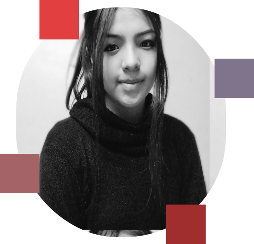

01
INICIO
SHARON HUAMAN
Egresada en ingeniería de sistemas y computación, Laboratorian, en proceso de front-end developer.
Pasco - Perú

Egresada en ingeniería de sistemas y computación, Laboratorian, en proceso de front-end developer.
Pasco - Perú